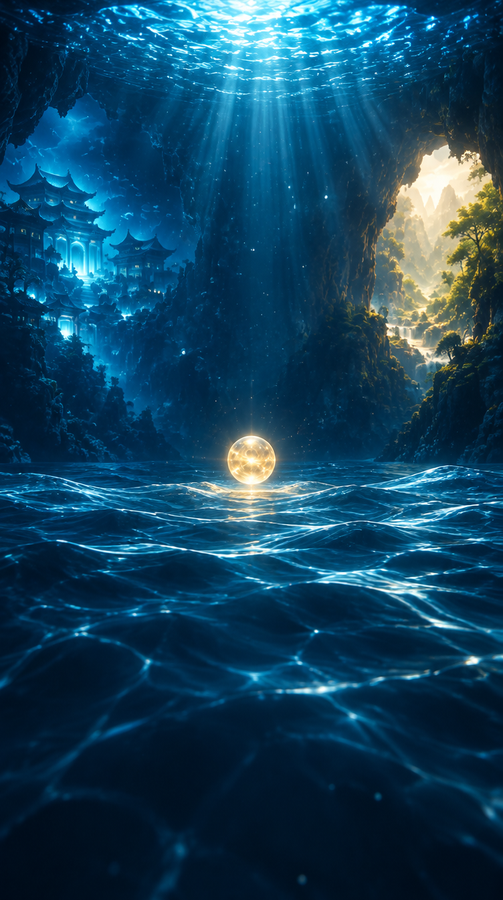

마음의 물결
선택의 바다에서, 나의 방향을 만나다
손끝으로 고르고, 마음에 남은 말을 붙잡아 보세요원하는 물방울을 손끝으로 1초 동안 가리켜 주세요
마음에 남은 말
단어 위에서 주먹을 쥐거나 두 손을 모아 박수쳐 주세요
발전하고자 하는 삶
안정적인 삶
당신의 물결은
계속 이어집니다
잠시 후 처음 화면으로 돌아갑니다
카메라 대기
실행 파일로 열어 주세요
이 폴더의 실행하기.bat를 실행하면
카메라를 사용할 수 있는 주소가 열립니다.